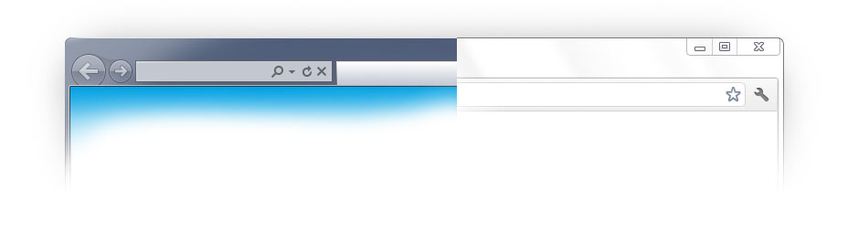

وارد دنیایی جدید از وب شوید!
پلاگینی ساده برای اضافه کردن قابلیت های جدید به اینترنت اکسپلورر
دانلود کروم فریمبرای ویندوز 7/Vista/XP

اینترنت اکسپلورر جادویی
تکنولوژی های وب را به اینترنت اکسپلورر بیاورید، کروم فریم به مرورگر پیشفرض ویندوز امکان استفاده از تکنولوژی های روز را می دهد
برای توسعه دهنده ها
استفاده از کروم فریم برای شما سریع و ساده است، کافی است با یک تگ اینترنت اکسپلورر را مجاب به استفاده از کروم فریم کنید.
به ما بپیوندید
به گروه های بحث و تبادل نظر ما در گوگل بپیوندید و نظر خود را به ما بگوئید و یا باگ های نرم افزاری را بیابید و به ما در حل آنها کمک کنید